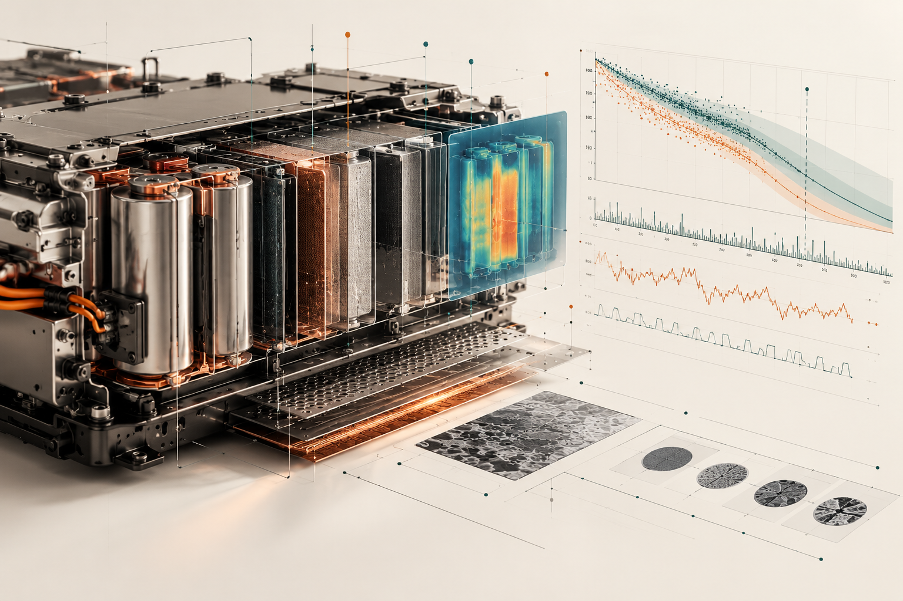

PATENT / US11527786B1
Predicting battery life from real-world data
Systems and methods for predicting remaining useful life in batteries and assets

Combines battery measurements, contextual information and a hybrid physics-based / machine-learning approach to estimate remaining useful life at cell level. The goal is to turn operating data into actionable predictions about degradation and service life, rather than relying only on fixed assumptions or isolated measurements.
Why it matters
Remaining-useful-life estimates can help operators plan maintenance, understand degradation and make better use of operational data instead of relying only on fixed replacement intervals.
At a glance
Technology area: Battery analytics · Machine learning · RUL.
This is an executive-level summary, not legal advice or a substitute for the patent claims. See the published record for the authoritative description, inventors and legal status.
Read patent record ↗